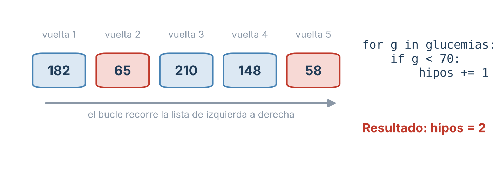
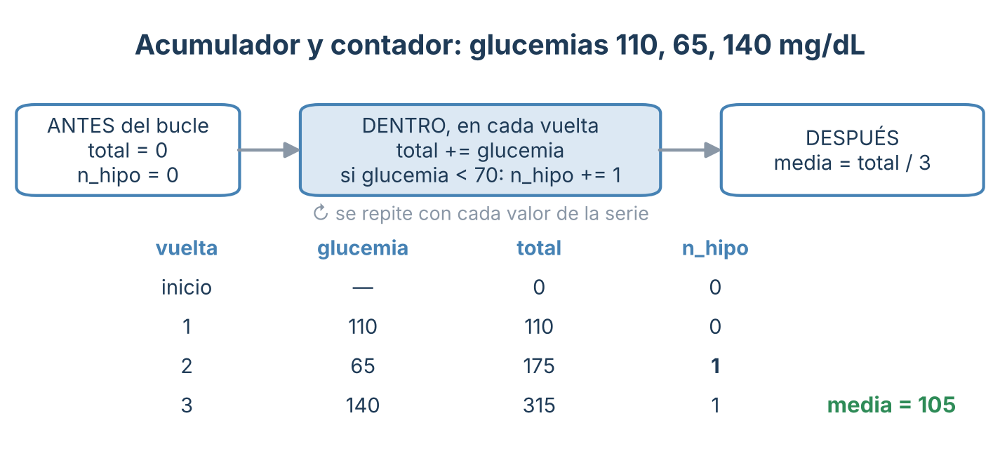
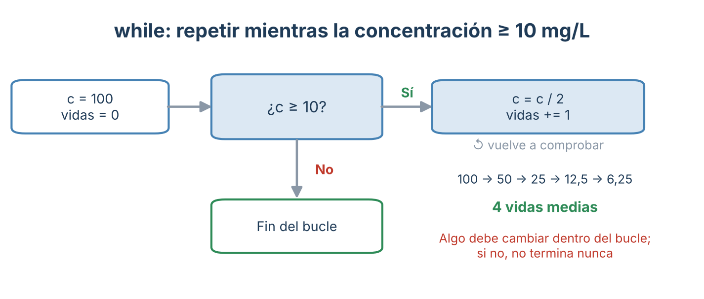
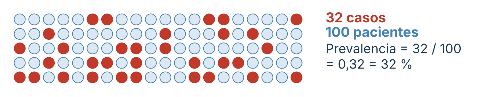

Bioestadística (1964) · Grado en Medicina · Curso 2027-2028
Tema 40Estructuras iterativas para el procesamiento de series de pacientes
Módulo 1. Descubriendo Python
Fernando Borrás Rocher · Universidad Miguel Hernández de Elche · CC BY 4.0
Objetivos de aprendizaje
Al terminar esta sesión serás capaz de:
- Recorrer una serie de mediciones o una cohorte de pacientes con un bucle
for. - Usar acumuladores y contadores para calcular totales, medias y proporciones.
- Combinar bucles y condiciones para detectar valores de alarma.
- Recorrer varias listas a la vez con
zip()y numerar los elementos conenumerate(). - Repetir un cálculo mientras se cumpla una condición con un bucle
while. - Calcular la prevalencia de una condición en una cohorte sintética.
Cómo usar esta presentación
Usa el selector de arriba para dar el tema en una sesión completa o en dos sesiones intercaladas.
🎓 Sesión de clase magistral
- 1. Caso clínico de partida 5 min
- 2. Conceptos clave 10 min
- 5. Autoevaluación 5 min
Explica los conceptos, haz la pausa activa y cierra con las ideas clave.
💻 Sesión de Colab
- 3. Demostración: bucles con datos clínicos 20 min
- 4. Práctica en la app Bioestadística 10 min
- 5. Autoevaluación 5 min
Cada estudiante abre su copia del cuaderno, predice el resultado y después ejecuta la celda.
Teclas: ← → para pasar · N notas del profesor · M cambiar de modo · F pantalla completa · Esc índice.
1. Caso clínico de partida
Ocho pacientes, 40 glucemias: ¿quién ha tenido hipoglucemia?
- Revisar a mano cada valor es lento y propenso a errores, y mañana habrá que repetirlo.
- La instrucción es siempre la misma: para cada paciente y para cada glucemia, comprueba si es < 70.
2. Conceptos clave
2.1 El bucle for
El bucle for recorre la serie elemento a elemento

- En cada vuelta, la variable toma el siguiente valor de la lista.
- El cuerpo del bucle (sangrado) se repite tantas veces como elementos haya.
2. Conceptos clave
2.2 Acumuladores y contadores

Para resumir una serie se usa una variable que se inicializa antes del bucle y se actualiza dentro de él:
| Patrón | Inicialización | Dentro del bucle | Ejemplo clínico |
|---|---|---|---|
| Acumulador | total = 0 |
total = total + valor |
Suma de glucemias para la media |
| Contador | n = 0 |
n = n + 1 si se cumple una condición |
Número de hipoglucemias |
| Lista de resultados | resultados = [] |
resultados.append(...) |
IMC de cada paciente |
total = total + valor puede abreviarse como total += valor.
2. Conceptos clave
2.3 El bucle while
while: repetir mientras se cumpla una condición
- Se usa cuando no se sabe de antemano cuántas vueltas hacen falta.
- Cuidado: si la condición nunca deja de cumplirse, el bucle no termina.

2. Conceptos clave
2.4 Prevalencia
Prevalencia = casos / total

- Con un contador dentro de un bucle se calcula la primera medida de frecuencia.
- Es una proporción: entre 0 y 1, o entre 0 % y 100 %, y siempre en un momento dado.
Pausa activa
Piensa 30 segundos, comenta con quien tienes al lado y vota.
¿Cuántas veces se ejecuta print en: for h in range(0, 24, 6): print(h)?
En la sesión de Colab
Lo que acabas de ver se comprueba con datos en el cuaderno del Tema 40.
- Abre el cuaderno y guarda tu copia: Archivo → Guardar una copia en Drive.
- Ejecuta la celda de configuración.
- Ve a la demostración y predice cada resultado antes de ejecutar.
3. Demostración: bucles con datos clínicos
3.1 Recorrer una serie de mediciones
▶ En tu cuaderno: 3.1 Recorrer una serie de mediciones. Antes de ejecutar, escribe qué esperas obtener.
glucemias_mg_dl = [182, 165, 64, 148, 139, 92]
for glucemia in glucemias_mg_dl:
print(glucemia, "mg/dL")3. Demostración: bucles con datos clínicos
3.2 Acumulador: la media
▶ En tu cuaderno: 3.2 Acumulador: la media. Antes de ejecutar, escribe qué esperas obtener.
total = 0
for glucemia in glucemias_mg_dl:
total += glucemia
media = total / len(glucemias_mg_dl)
print(f"Glucemia media: {media:.1f} mg/dL")Python tiene la función sum(), que hace lo mismo en una línea. Escribir el bucle sirve para entender qué hace sum() por dentro y para cuando el cálculo es más complejo que una suma.
print(sum(glucemias_mg_dl) / len(glucemias_mg_dl))3. Demostración: bucles con datos clínicos
3.3 Bucle con condición: detectar hipoglucemias
▶ En tu cuaderno: 3.3 Bucle con condición: detectar hipoglucemias. Antes de ejecutar, escribe qué esperas obtener.
hipoglucemias = 0
for glucemia in glucemias_mg_dl:
if glucemia < 70:
hipoglucemias += 1
print(f"Hipoglucemia detectada: {glucemia} mg/dL")
print("Total de hipoglucemias:", hipoglucemias)3. Demostración: bucles con datos clínicos
3.4 Numerar con enumerate() y emparejar con zip()
▶ En tu cuaderno: 3.4 Numerar con enumerate() y emparejar con zip(). Antes de ejecutar, escribe qué esperas obtener.
enumerate() da a la vez la posición y el valor. Aquí se suma 1 a la posición para numerar las tomas desde 1, como se haría en la gráfica de enfermería.
for posicion, glucemia in enumerate(glucemias_mg_dl):
print(f"Toma {posicion + 1}: {glucemia} mg/dL")zip() recorre varias listas a la vez, emparejando sus elementos. Útil cuando sistólica y diastólica se guardan en listas separadas.
horas = ["08:00", "14:00", "20:00"]
pas_mmHg = [152, 138, 145]
pad_mmHg = [94, 86, 91]
for hora, pas, pad in zip(horas, pas_mmHg, pad_mmHg):
pam = pad + (pas - pad) / 3
print(f"{hora} PA {pas}/{pad} mmHg PAM {pam:.0f} mmHg")3. Demostración: bucles con datos clínicos
3.5 Repetir un número de veces: range()
▶ En tu cuaderno: 3.5 Repetir un número de veces: range(). Antes de ejecutar, escribe qué esperas obtener.
range(n) genera los números de 0 a n − 1. range(inicio, fin, paso) permite elegir el inicio, el final (no incluido) y el salto.
# Horas de administración de un antibiótico cada 8 horas durante un día
for hora in range(0, 24, 8):
print(f"Dosis a las {hora:02d}:00")3. Demostración: bucles con datos clínicos
3.6 Recorrer una cohorte
▶ En tu cuaderno: 3.6 Recorrer una cohorte. Antes de ejecutar, escribe qué esperas obtener.
La cohorte del caso: cada paciente es un diccionario con su código y sus glucemias. Un bucle dentro de otro (bucles anidados) recorre primero los pacientes y, para cada uno, sus glucemias.
cohorte = [
{"codigo": "E-01", "glucemias": [182, 165, 148, 139]},
{"codigo": "E-02", "glucemias": [96, 64, 110, 128, 105]},
{"codigo": "E-03", "glucemias": [210, 198, 176, 160, 155, 149]},
{"codigo": "E-04", "glucemias": [88, 72, 69, 91]},
{"codigo": "E-05", "glucemias": [140, 132, 151, 147]},
{"codigo": "E-06", "glucemias": [120, 115, 98, 101, 110]},
{"codigo": "E-07", "glucemias": [65, 58, 92, 140]},
{"codigo": "E-08", "glucemias": [170, 162, 158, 149, 152]},
]
pacientes_con_hipoglucemia = 0
for paciente in cohorte:
glucemias = paciente["glucemias"]
media = sum(glucemias) / len(glucemias)
tuvo_hipoglucemia = False
for glucemia in glucemias:
if glucemia < 70:
tuvo_hipoglucemia = True
if tuvo_hipoglucemia:
pacientes_con_hipoglucemia += 1
marca = " ← hipoglucemia" if tuvo_hipoglucemia else ""
print(f"{paciente['codigo']}: media {media:.0f} mg/dL{marca}")
proporcion = pacientes_con_hipoglucemia / len(cohorte)
print(f"\nPacientes con alguna hipoglucemia: {pacientes_con_hipoglucemia} de {len(cohorte)} ({proporcion:.0%})")El formato {proporcion:.0%} multiplica por 100 y añade el signo de porcentaje.
3. Demostración: bucles con datos clínicos
3.7 El bucle while: eliminación de un fármaco
▶ En tu cuaderno: 3.7 El bucle while: eliminación de un fármaco. Antes de ejecutar, escribe qué esperas obtener.
Un fármaco con una vida media de 6 horas reduce su concentración plasmática a la mitad cada 6 horas. Si la concentración inicial es 40 mg/L, ¿cuántas horas tardará en bajar a 5 mg/L o menos? No sabemos de antemano cuántas vueltas hará falta dar: es un caso típico de while.
concentracion_mg_l = 40
vida_media_h = 6
umbral_mg_l = 5
horas = 0
while concentracion_mg_l > umbral_mg_l:
concentracion_mg_l = concentracion_mg_l / 2
horas += vida_media_h
print(f"A las {horas} h: {concentracion_mg_l:.1f} mg/L")
print(f"Tarda {horas} horas ({horas // vida_media_h} vidas medias) en llegar a {umbral_mg_l} mg/L")Ampliación
Ampliación: break y continue
break sale del bucle en cuanto se cumple algo; continue salta a la siguiente vuelta. Útil para detenerse en la primera alarma o para ignorar datos ausentes.
saturaciones = [97, 96, None, 94, 89, 95]
for toma, sat in enumerate(saturaciones, start=1):
if sat is None:
print(f"Toma {toma}: sin dato, se omite")
continue
if sat < 90:
print(f"Toma {toma}: saturación {sat} %. Avisar al médico de guardia.")
break
print(f"Toma {toma}: {sat} %")Ampliación
Ampliación: listas por comprensión
Una lista por comprensión construye una lista nueva en una sola línea a partir de otra. Es una forma compacta de escribir un bucle con append().
glucemias_mg_dl = [182, 165, 64, 148, 139, 92]
glucemias_mmol_l = [round(g / 18, 1) for g in glucemias_mg_dl]
hipoglucemias = [g for g in glucemias_mg_dl if g < 70]
print(glucemias_mmol_l)
print(hipoglucemias)Ampliación
Ampliación: errores frecuentes
Inicializar el acumulador dentro del bucle. Si total = 0 se escribe dentro del for, se pone a cero en cada vuelta y al final solo contiene el último valor.
Olvidar la sangría. Lo que no está sangrado no forma parte del bucle y se ejecuta una sola vez al final.
Bucles while infinitos. Si dentro del bucle no cambia nada que afecte a la condición, el bucle no termina. En Colab se detiene con el botón ■ de la celda.
Modificar la lista que se recorre. Añadir o quitar elementos de una lista mientras se recorre con for produce resultados imprevisibles; es mejor construir una lista nueva.
Dividir entre cero. Al calcular una media o una proporción, comprueba que la serie no está vacía: len(lista) == 0 produce ZeroDivisionError.
4. Práctica en la app Bioestadística
Abre la unidad 40 de la app Bioestadística y completa sus misiones:
- Misión básica (sin asistente): predecir cuántas veces se ejecuta un bucle y qué valor final tiene un acumulador.
- Misión clínica (con pistas): calcular la prevalencia de hipertensión en una cohorte sintética y el IMC de cada paciente.
- Misión reto (con asistente): programar con
whilecuántas dosis de mantenimiento hacen falta para llegar al estado estacionario de un fármaco. Verificar el código que proponga el asistente.
Al terminar, exporta el informe de la unidad.
5. Autoevaluación
Responde sin asistente y sin ejecutar código.
5. Autoevaluación
Elige una opción: verás la explicación.
¿Cuántas veces se ejecuta print en: for h in range(0, 24, 6): print(h)?
Se quiere contar las glucemias menores de 70 mg/dL. ¿Dónde debe ir contador = 0?
En una cohorte de 250 pacientes, 45 tienen diabetes. ¿Cuál es la prevalencia de diabetes?
¿Cuándo es preferible un bucle while a un bucle for?
Un fármaco tiene una vida media de 4 horas y una concentración inicial de 80 mg/L. ¿Qué concentración tiene a las 12 horas?
Ideas clave
- Un bucle
foraplica la misma operación a cada elemento de una serie. - Los acumuladores y contadores se inicializan antes del bucle y se actualizan dentro.
- Un bucle con un
ifdentro detecta valores de alarma y calcula proporciones como la prevalencia. whilerepite mientras se cumpla una condición; dentro, algo debe cambiar para que termine.
Glosario
| Término | Definición |
|---|---|
| Bucle | Estructura que repite un bloque de instrucciones |
| Iteración | Cada una de las vueltas de un bucle |
| Acumulador | Variable que va sumando valores en cada iteración |
| Contador | Variable que cuenta cuántas veces se cumple una condición |
| Bucles anidados | Un bucle dentro de otro |
| Prevalencia | Proporción de individuos con una condición en un momento dado |
| Vida media | Tiempo que tarda la concentración de un fármaco en reducirse a la mitad |